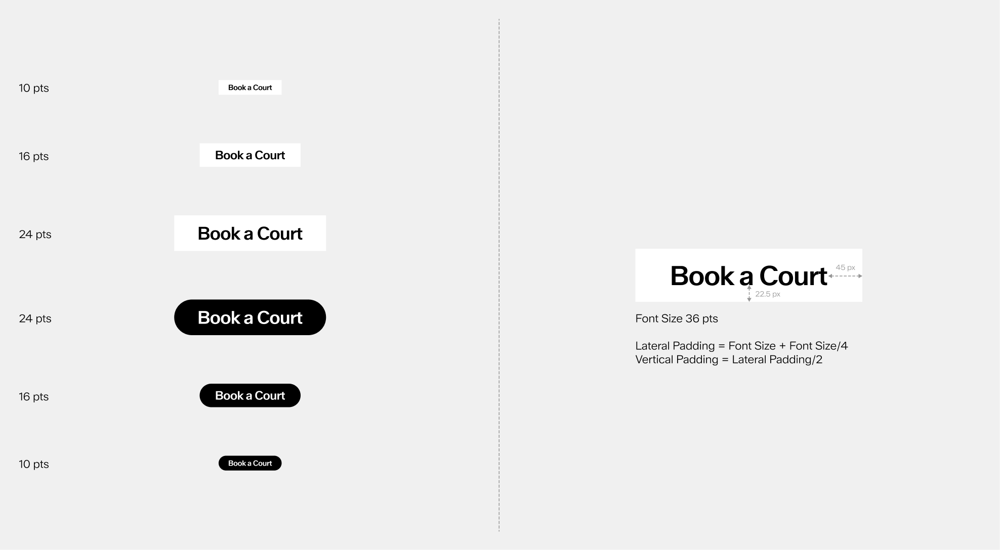
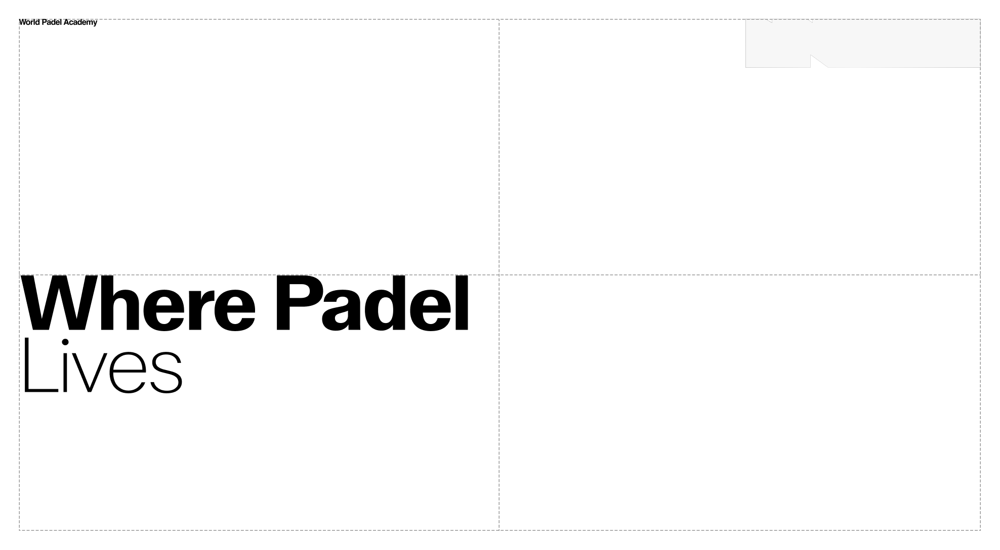

Digital Applications
WPA's digital presence is where our brand comes to life for most audiences. From websites to social platforms, our design system must feel seamless, clear, and engaging across every interaction. Digital applications translate the core of our identity — precision, energy, and accessibility — into user-friendly experiences.
These guidelines define how navigation, layouts, grids, and interactive components should be applied to maintain consistency and clarity. By following these rules, we ensure that every digital touchpoint reflects WPA's premium positioning while remaining easy to use, adaptable, and welcoming to all players.
9.1. Web & UI Principles
Layout Application
Global layout should be airy and punctuated with images and texts. CTA Buttons should be used sparingly and invite the user to click on it. Text and buttons over images should remains legible at all time in order to maintain consistency.

Grid Application
In addition to following the above recommendations, it is also important to adhere to an established grid. The various elements must follow rulers to maintain consistency between pages and ensure that information and CTAs are easy to read and accessible.
Arriving at the bottom of the website, the appearance of the footer should trigger the automatic opening of the navigation menu.
9.2. Buttons & Components
Overview
To enhance user experience, it's essential to limit the number of buttons and position them thoughtfully to avoid any confusion. Additionally, maintaining a consistent style across all buttons will help create a cohesive look and feel throughout the interface.
Scalability
Lateral Padding = Font Size + Font Size/4
Vertical Padding = Lateral Padding/2
Example for a Button with a 36 pts font size :
Lateral Padding = 36 + 36/4 = 36 + 9 = 45 px
Vertical Padding = 45/2 = 22.5 px
Sizing & Placement
The WPA container box serves as a versatile Menu button, which can be extended or stretched to provide access to various pages, enhancing navigation and user experience.
color Options
The button may only be used in black, white, or approved core palette colors. When placed on an image, always ensure there is enough contrast so the button stays clear and easy to read.
Button Misuse
The button has been designed with specific uses in mind, and its appearance must remain consistent at all times. It must not be altered, distorted, or decorated in any way. To preserve clarity and legibility, always follow the established guidelines. Below are common mistakes to avoid.
 Do not apply a stroke to the button
Do not apply a stroke to the button